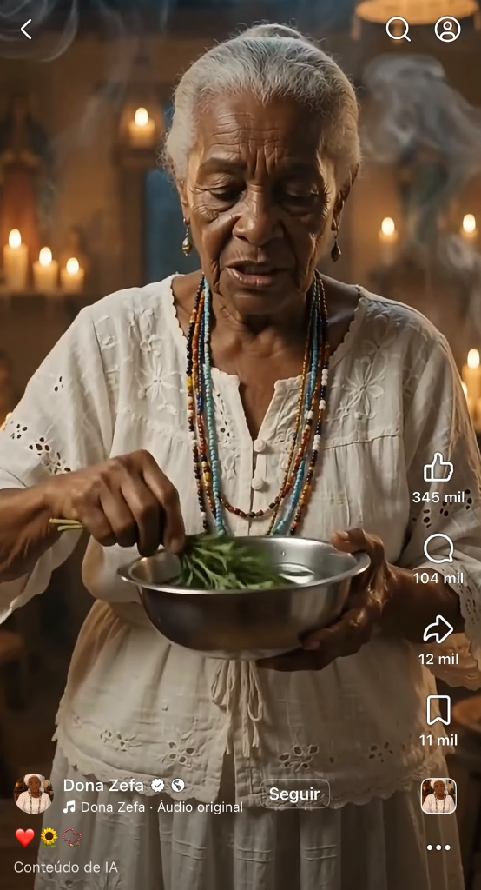
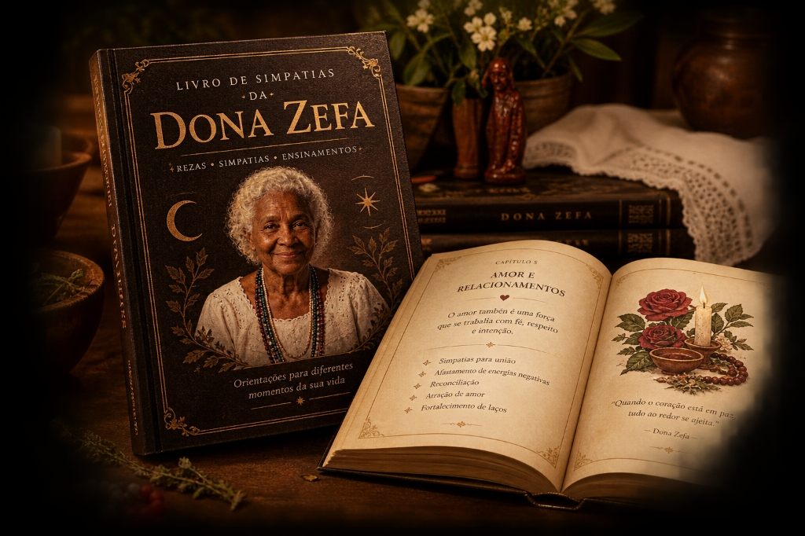
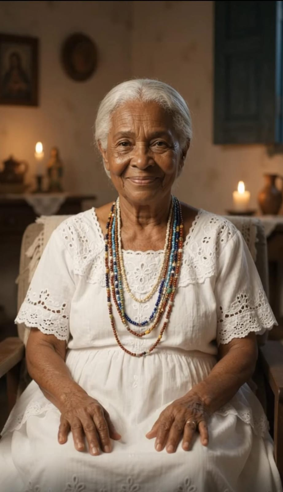

Caminhos e Vida Financeira
Às vezes é o dinheiro que parece não andar.
Eu sou a Vovó Zefa. E o que eu não consigo contar todo em poucos segundos, eu quero te contar agora.
Você já me viu falando de bênção, de proteção, de amor. Já me viu acendendo a vela, já me viu com o livro antigo na mão.
O que eu quero te mostrar agora é a continuação dessa conversa.

Às vezes é o dinheiro que parece não andar.
Às vezes é o coração que fica apertado por causa de alguém.
E às vezes é aquela sensação de inveja, olho gordo ou de uma energia pesada por perto.
“Se você já sentiu alguma dessas coisas, filha, eu sei como é importante ter um cuidado, uma reza ou um ensinamento para recorrer quando precisar.”
No meio da rotina, um vídeo meu apareceu para você com uma palavra de bênção, carinho e fé.

“O que a gente vê na tela logo se perde.”
Nas redes, eu compartilho rezas, simpatias e conselhos conforme o coração pede. Você assiste e sente aquele amparo bom.
Só que o vídeo corre rápido na tela e fica para trás. E quando a aflição aperta de novo, nem sempre é fácil reencontrar aquela mesma reza.
“Tudo reunido para você consultar na hora em que precisar.”
Para você não depender da sorte de achar um vídeo quando a vida exigir firmeza, reuni as rezas, simpatias e cuidados dos mais velhos em um só lugar.
Tudo organizado por capítulos de caminhos, amor e proteção — para você abrir no celular a qualquer hora, no silêncio de casa, e cuidar de quem você ama.

É conhecimento de raiz, reza antiga e fé sincera reunidos em um só lugar.

Eu sou a Vovó Zefa.
O que eu compartilho vem dos ensinamentos que aprendi com os mais velhos — simpatias, rezas e cuidados que atravessaram gerações.
“Você não precisa chegar aqui sabendo tudo. Nem precisa entender de tudo.”
É só sentar, ouvir e conhecer aquilo que eu aprendi e hoje compartilho com você.
Conheça o Livro da Vovó Zefa.
Reunindo as simpatias, rezas e ensinamentos que você já conhece dos vídeos, mas agora organizados de forma clara e prática para consultar quando precisar.
Uma explicação importante, filha: este é um livro digital feito para você ler aí mesmo, na tela do seu celular, tablet ou computador. A letra é bem grande e confortável. Como não vai pelo correio, não tem frete, e você recebe acesso na mesma hora no seu e-mail para abrir e guardar para sempre.
Um resgate dos costumes antigos para proteger sua casa, abrir caminhos e cuidar de quem você ama.
Não são apenas palavras, são ensinamentos passados de geração em geração. Conselhos que trazem paz pro coração nos momentos de aflição e dúvida.
Práticas antigas e benzimentos para afastar a inveja, atrair prosperidade para o seu lar e blindar a sua família de todo mal.
Feito com todo o carinho para quem tem a vista cansada. Uma leitura suave, com letras bem grandes, para você ler no seu tempo e sem pressa.
Você recebe de forma imediata e guarda com você para sempre. Um companheiro diário para consultar e passar para seus filhos e netos quando precisar de uma luz.
“Não é sobre tecnologia nem arquivos passageiros. É sobre ter em mãos o carinho, a fé e a voz dos nossos avós quando você mais precisa de aconchego.”
Tudo reunido em um livro organizado em 15 capítulos com letra grande, para você guardar no celular e consultar quando quiser.

Cada um que comprar o livro terá o nome salvo e anotado para uma reza especial da Vovó, para ajudar naquilo que você está precisando.
Se por qualquer motivo achar que os ensinamentos não são para você, basta nos avisar em até 7 dias e devolveremos sua ajuda integralmente. Sem letras miúdas, apenas respeito.
Tudo o que você precisa saber antes de ter o seu livro.
É um livro digital (e-book em PDF). Você recebe o arquivo diretamente no seu e-mail e pode ler no celular, tablet ou computador, sem pagar frete e sem esperar entrega.
Assim que o pagamento for confirmado, você recebe no seu e-mail um link para baixar o livro na hora.
O processo é muito simples: basta clicar no link que você vai receber. Se precisar de ajuda, temos um suporte pronto para orientar você passo a passo.
Não. O livro foi escrito em linguagem simples, com passo a passo claro, pensado justamente para quem quer aprender do zero ou ter os ensinamentos organizados para consultar.
Filha, a nossa fé e a sabedoria dos mais velhos não têm preço. O valor de R$ 27 é apenas uma ajuda simbólica para manter a nossa casa e cuidar das crianças 💛. Não queremos que o dinheiro seja um impedimento para você ter essas rezas e simpatias abençoando o seu lar 📿.
Se dentro de 7 dias você achar que o material não é o que você esperava, basta entrar em contato e o valor pago será devolvido integralmente.
O material reúne simpatias, rezas e ensinamentos tradicionais compartilhados pela Vovó Zefa. A forma como esse conteúdo deve ser praticado ou interpretado fica a critério de cada pessoa e de sua própria fé.
Nos vídeos, você encontra os conteúdos enquanto eles passam pelo seu feed. O livro reúne o material em um formato organizado, que você pode guardar e consultar novamente quando quiser. Não é preciso depender de encontrar novamente aquele vídeo.
Sim. A compra é processada pela Kirvano, uma plataforma segura e confiável de produtos digitais. Seus dados são protegidos e o pagamento é 100% seguro.
Eu reuni esses ensinamentos com carinho para deixar esse conhecimento organizado em um lugar que você possa guardar.
Se você chegou até aqui porque algum dos meus vídeos falou com você, agora pode levar um pedacinho dessa conversa para dentro da sua casa.
Que esses ensinamentos tragam paz, amor e caminhos abertos. Um valor simbólico de R$ 27 para abençoar a sua vida e ajudar a nossa casa e as crianças 💛.
Com carinho e bênçãos,
✦ Vovó Zefa ✦